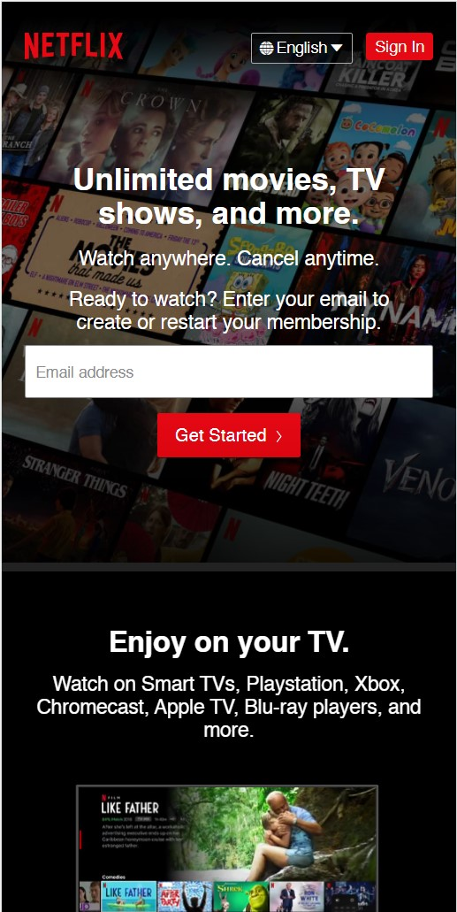

NETFLIX
NETFLIX Link Visual Hierarchy is extremely important. As a designer, we have to ensure that all parts of the website are outstanding depending on the objectives of the client. And in my opinion, this was clearly portrayed on this website with the use of a call to action button and eye catching colors.